算术函数 | Arithmetic Functions¶
约 3174 个字 预计阅读时间 16 分钟
我们主要讨论的计算主要包括逻辑运算和算术运算，前者由于可以直接通过基本门很方便实现，所以我们不过多考虑；在此主要介绍算术运算。在计算机硬件中，承担计算工作的主要部件为 ALU(Arithmetic Logical Unit)。
引入
在之前 #译码器 和 #多路选择器 的部分中已经介绍过一些实现 1 bit 加法器的方法，接下来我们就来详细看看加法器这个东西。
首先我们需要了解加法器最底层的单元，即实现 1 bit 运算的 半加器(half adder) 和 全加器(full adder)，接下来需要将他们组合在一起，实现 n bits 的加法器，其中主要介绍 行波加法器(binary ripple carry adder)。此外，基于一些编码的知识，我们还可以将它改装成加减法器。
加法器 | Adder¶
半加器 & 全加器 | Half Adder & Full Adder¶
对于二进制加法，其输出无疑有当前位的和 S 和进位 C，而输入除了两个操作数 X 和 Y 以外，还可能有上一位的进位 Z(或者C_{n-1})。而对于一个二进制数的第一位，显然不会有进位，或者说 Z=0，所以我们可以将这个 Z 去掉，即输入只有 X 和 Y，这就是 半加器(half adder)；显然，对应的，如果输入中有上一位的进位 Z，则称为 全加器(full adder)。


更符合 Carry 产生的原理：
- 记 \(X\cdot Y\) 是carry generate(产生进位)；
- 记 \(X\oplus Y\) 是carry propagate(传递进位)。

行波加法器 | Ripple Carry Adder¶
行波加法器是朴素的 n bits 加法器实现。其核心思想也就是模拟我们使用“竖式”来计算加法，从低位开始逐位计算，并将进位给到下一位作为输入。
实际上无论是只用半加器或是只用全加器，都可以实现行波加法器，无非是通过外部器件来进行互相转化而已。如果只使用全加器来实现，则以 4 bits 行波加法器为例，其大致逻辑如下：

其中，在加法器中，\(C_0\) 必然是 0。
加减法器，或者说加法器，一般情况下在 ALU 中是最影响效率的部分，而且如果使用行波加法器，随着位数增加效率会越来越慢。
所以会有类似于超前进位加法器之类的东西来解决这个问题。
更多的内容可以看 咸鱼暄的计组笔记。（数逻中最多了解到超前进位加法器即可。）
超前进位加法器 Carry Look-Ahead Adder¶
首先我们先把注意力放在一个全加器上。要把多个全加器连接起来形成能够计算更大数据的加法器，关键在于如何处理好全加器之间「进位」的问题。对于一个全加器而言，它向后一个全加器的进位（\(C\)，carry）有两个来源，一个是自身加法产生的进位，记为 \(G\)（generate），另一个是前一个全加器传递过来的进位，记为 \(P\)（propagate），我们有：
具体电路实现如下图：
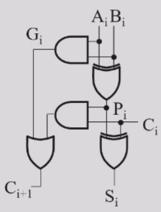
最自然的想法是把全加器直接链式连接，即直接把前一个全加器的进位连接到后一个全加器上，这样的做法叫做行波加法器（ripple-carry adder）。行波加法器最大的弊端在于，后一个全加器需要等待前一个全加器的计算完毕后，才能把进位传递过来，当处理较大数据的加法时，行波加法器的效率就太低了。
所以，有没有办法提前把进位传递下去，而不需要等待前面的全加器完全计算完毕呢？超前进位加法器（carry-lookahead adder, or CLA）就是用来解决这个问题的。那么超前进位加法器是怎么做到提前把进位传递下去的呢？让我们再把注意力转向公式推导：
我们发现，\(C_4\) 不再依赖于 \(C_3\)，而是直接依赖于 \(C_0\)。我们只需要并行计算每个全加器的 \(P\) 和 \(G\)，然后把 \(C_0\) 与它们结合即可计算得出每个全加器向后传递的进位 \(C_{i+1} = G_{0\sim i} + P_{0\sim i} C_0\)。
具体电路实现如下图，我们发现所有全加器的 \(P\) 和 \(G\) 都是并行计算的，而对于每个进位的计算，只需要额外消耗 \(C_0\) 经过一个与门和一个或门的时间：
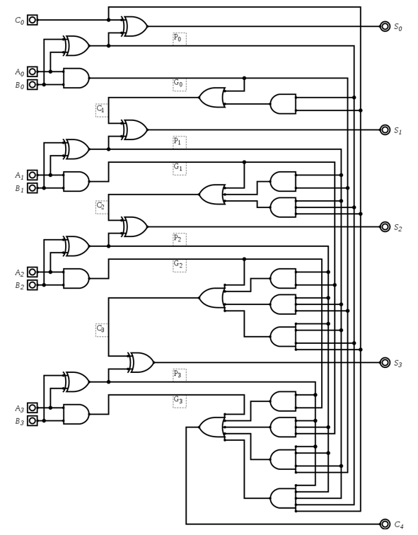
模块化超前进位加法器 | Group Carry Look-Ahead Adder¶
但我们发现，这样的超前进位加法器虽然解决了进位延迟的问题，但是仍然无法大规模使用，问题的关键在于电路中的多输入与门和或门，如果我们要连接 \(n\) 个全加器，那么就需要 \(n+1\) 输入的与门和或门，这是不现实的。所以我们考虑把这一个 4-bit 超前进位加法器作为一个模块，并在此基础上组建更大的超前进位加法器。
我们惊讶地发现，这个 \(C_{16}\) 表达式的写法和之前推导超前进位加法器时 \(C_4\) 的写法是完全一致的，只需要做一些下标变换即可。这就启发我们如何组建更大规模的超前进位加法器：我们把若干个小的超前进位加法器连接起来，就像我们当初把若干个全加器连接成超前进位加法器一样！


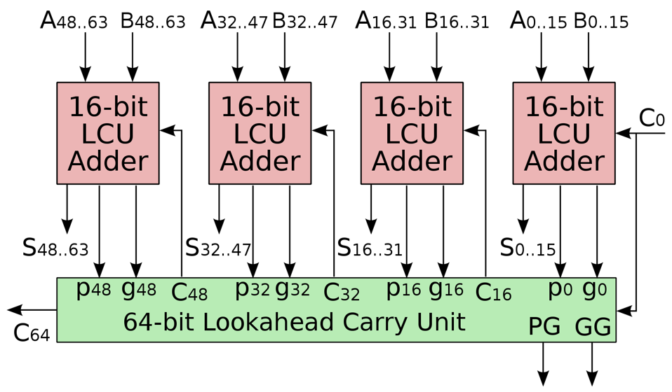
小结¶
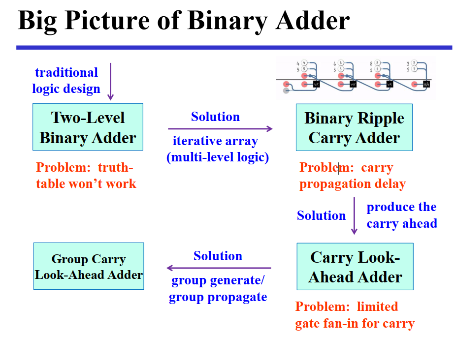
二进制减法¶
无符号数的表示与计算¶
为了实现减法，我们需要将减法转化为加法（这样子可以复用前文实现的加法器），即 \(A-B=A+(-B)\)，其中 \(-B\) 表示 \(B\) 的相反数。而对于二进制数，我们可以通过 补码(2's complement) 来表示一个数的相反数，即 \(-B=\overline{B}+1\)，其中 \(\overline{B}\) 表示 \(B\) 的按位取反。
首先，在开始二进制减法的介绍之前，你需要了解 补码(2's complement)，这可以查看修佬的 C 小笔记的补码内容。
Radix Complement
定义
\(r\) 进制下的 \(r\) 补码，表示为 \(r^n-x\)，其中 \(x\) 为 \(n\) 位数，\(n\) 为 \(r\) 进制下的数的位数。
在二进制下，这称作 2 补码（2's Complement），\(2^n-x\) 即为 \(x\) 的二进制补码。例如 \(x=1010\)，则 \(2^4-x=0110\)，即 二进制补码为 \(0110\)。
还可通过取反加一来得到补码，即 \(x\) 的补码为 \(\overline{x}+1\)。
Diminished Radix Complement
定义
\(r\) 进制下的 \(r-1\) 补码，表示为 \((r^n-1)-x\)，其中 \(x\) 为 \(n\) 位数，\(n\) 为 \(r\) 进制下的数的位数。
在二进制下，这称作 1 补码（1's Complement），\((2^n-1)-x\) 即为 \(x\) 的二进制反码。例如 \(x=1010\)，则 \((2^4-1)-x=0101\)，即 二进制反码为 \(0101\)。
还可通过取反来得到反码，即 \(x\) 的反码为 \(\overline{x}\)。
对于其他进制，例如三进制，其补码为 \(3^n-x\)，反码为 \(3^n-1-x\)，分别称作 3 补码 和 2 补码。
注意
无符号数在较小数减较大数时，会出现溢出。
有符号数的表示与计算¶
因为无符号数在较小数减较大数时，会出现溢出。所以我们需要引入有符号数。
有符号数相较于无符号数，其最高位为符号位，0 表示正数，1 表示负数。
这样我们用能将正数和负数都用有符号数表示出来了。
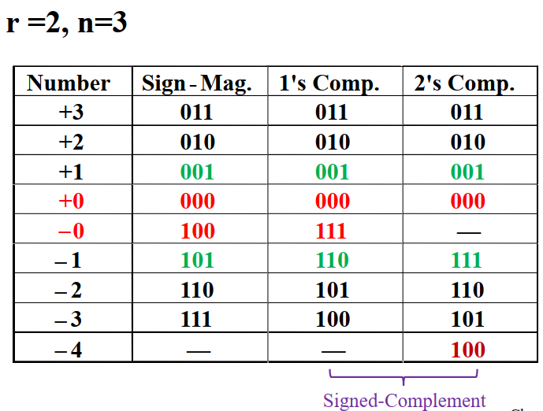
对于有符号数的补码，它的符号位是有效位，代表负权重。我们记最高位为 \(S\)，其余位为 \(A\)，则由符号数的补码，我们可以计算得到其值为 \(-S2^{n-1}+(A)_{10}\)，其中 \(n\) 为补码位数。
对正数，这肯定成立。
对负数，根据定义，记二进制数为 \(X\)（最高位为1），有
其中 \(X_{1:}\) 表示 \(X\) 除去最高位的部分。
符号扩展 | Sign Extension¶
对有符号数的补码，我们可以通过符号扩展来将其扩展为更多位的补码，即将符号位复制到更高位。
prove

溢出 | Overflow¶
有符号数的上下界分别为 \(2^{n-1}-1\) 和 \(-2^{n-1}\)，当计算结果超出这个范围时，就会发生溢出。
对于有符号数的加法，我们可以通过判断符号位是否相同来判断是否溢出（因为符号扩展，我们允许多个相同的符号位），01类型代表上溢，10类型代表下溢例如：
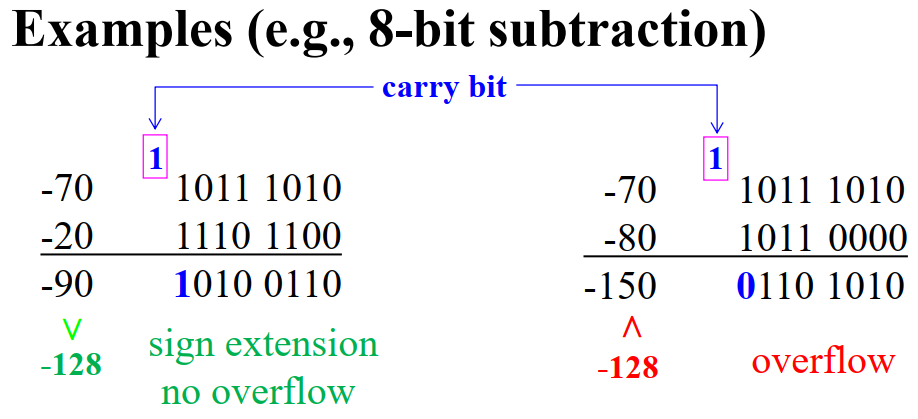
有符号的数值计算 | Signed-Magnitude¶
就是给绝对值的原码附上符号位
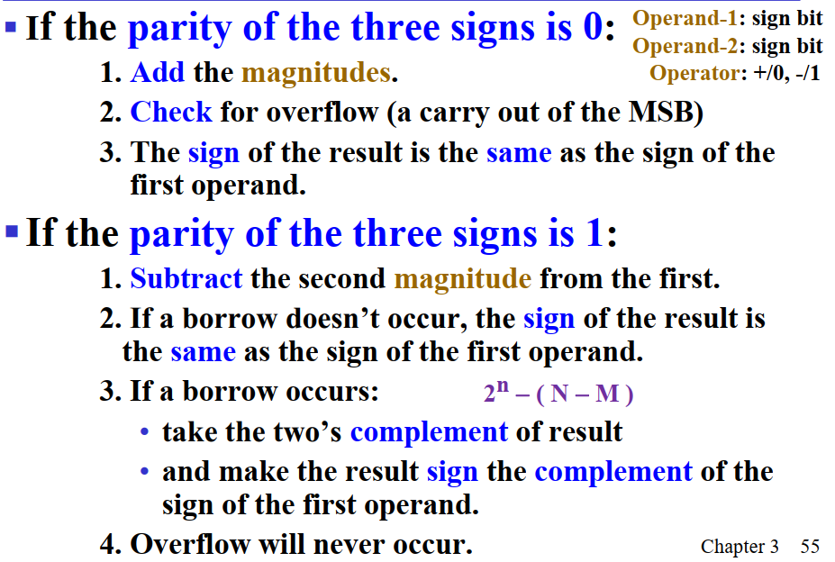

法 1 太繁琐了，我们介绍法 2 。
补码计算 | Signed-Complement¶

结合补码，我们再来观察行波加法器，我们需要对减数的每一位取反，并对整个数加一，再直接将它们相加即可，即将减法转化为补码下的加法。

其中加一这一步我们通过引入 S 来实现，即 S 为 1 时，加一，为 0 时，不加一。

溢出检测 | Overflow Detection¶
根据真值表
| \(X\) | \(Y\) | \(C_{in}\) | \(S\) | \(C_{out}\) | Overflow? |
|---|---|---|---|---|---|
| 0 | 0 | 0 | 0 | 0 | × |
| 0 | 0 | 1 | 1 | 0 | √ |
| 0 | 1 | 0 | 1 | 0 | × |
| 0 | 1 | 1 | 0 | 1 | × |
| 1 | 0 | 0 | 1 | 0 | × |
| 1 | 0 | 1 | 0 | 1 | × |
| 1 | 1 | 0 | 0 | 1 | √ |
| 1 | 1 | 1 | 1 | 1 | × |
由于在\(X\)，\(Y\)，\(C_{in}\)为 001 或 110为溢出，我们可以写出很多检测溢出的逻辑表达式，在其中，门输入最低的是
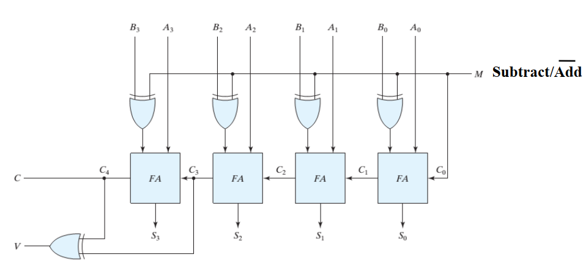
2-补码计算总结¶

其他算术功能模块¶
压缩 | Contraction¶
在已有的电路或函数表达式上采用相同的技术实现新的功能块，针对特定应用 将已有电路简化成一个简单电路，
自增与自减 | Increment & Decrement¶
- 自增与自减运算可以通过对加减法器进行收缩（contraction）得到
- 具体而言就是把加减法器的其中一个输入设为常量（自增自减的步长）
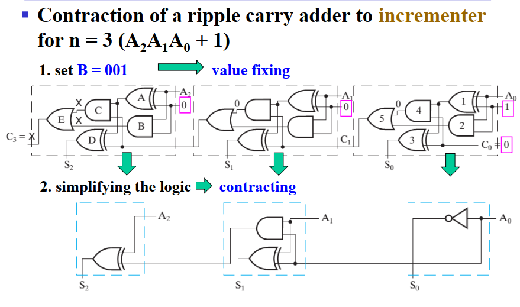
乘法与除法 | Multiplication & Division¶
- 与 \(2^n\) 的乘数是最简单的，只需要通过移位就可以实现

- 任意常数的乘除的一种实现思路是，拆分成与若干个 \(2^n\) 的乘除
零填充与符号扩展 | Zero Fill & Extension¶
零填充，用于增加操作数的位数。符号扩展 (sign extension) 用来增加用补码表示的有符号数的位数。
逻辑移位和算术移位 | Logic shift and Arithmetic shift"¶

逻辑移位：直接补零
算术移位：移位后把原符号位再赋给首位
除此，移位的方法还有循环移位（barrel shifter）
逻辑移位 | Logic shift¶
两级逻辑设计 | Two-level Logic design¶
两级逻辑设计，就是用真值表来设计电路，然后用逻辑门来实现。

基于多路选择器的设计 | Mux-based design¶

循环移位 | Barrel shifter¶
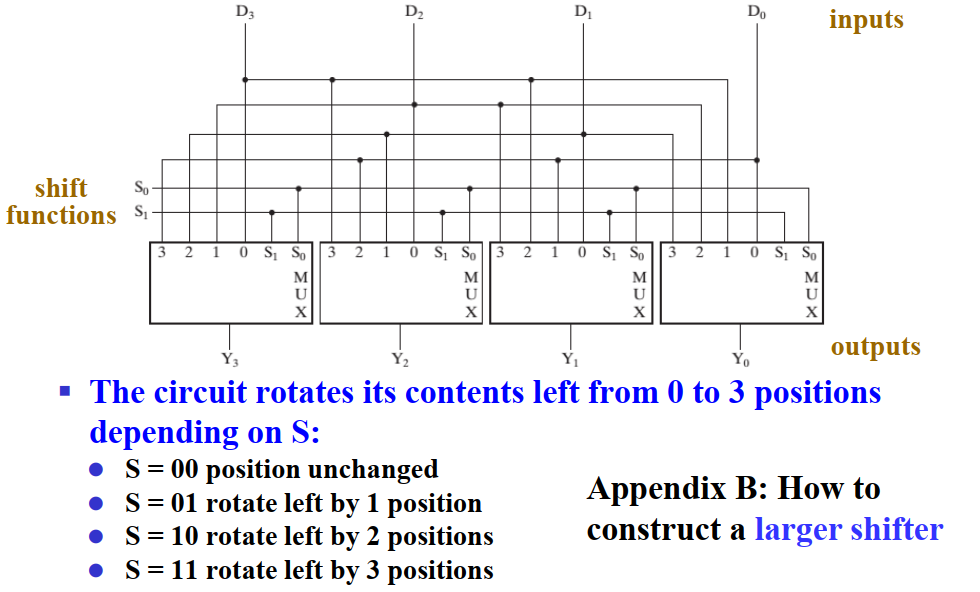
算术逻辑单元 | Arithmetic Logic Unit¶

特性：
- Two n-bit input: \(A_0-A_{n-1}, B_0-B_{n-1}\)
- mode selection (arithmetic/logical): \(S_2\)
- operation selection :\(S_0, S_1\)
- signed arithmetic: add/sub/inc/dec
- logical operation: and/or/not/xor
- 1-bit carry input: \(C_{in}\)

逻辑功能实现¶
一个 Mux 来选择四路逻辑运算。
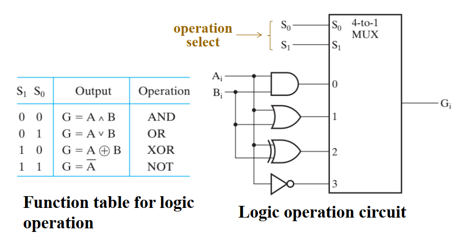
算术功能实现¶
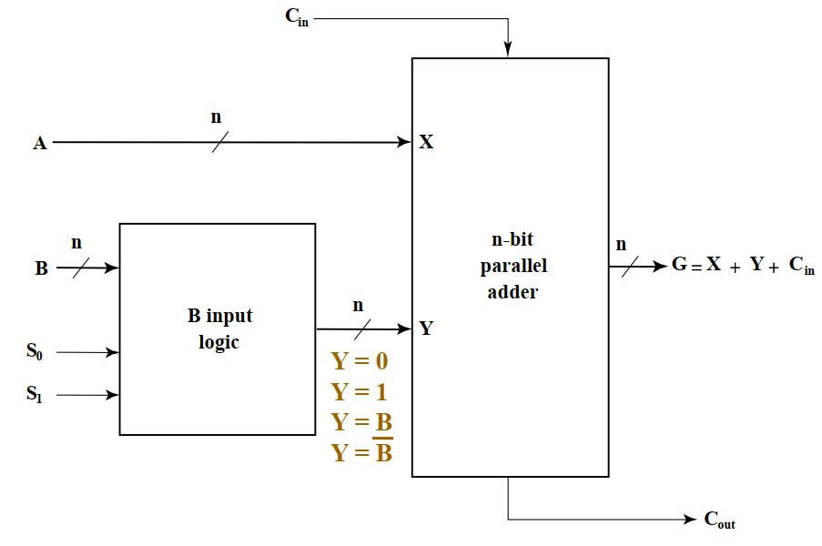
我们通过 \(S_0, S_1\) 来选择操作。